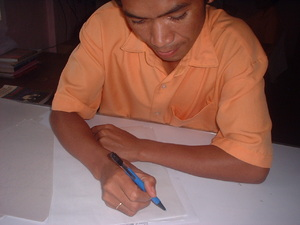
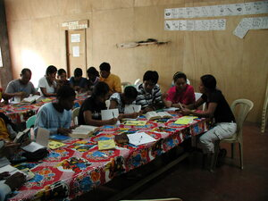

sulat  
/sulat/
v_rt n ???.
“write/letter”
n.
a letter
Wrd.Gloss: letter
Eng. letter; mail; document
Tag. létra; títik
Ceb. litra
Ilo.: létra
WBM: surat
OCM: Writing (212)
Online dict status: -
Usage level: B
vt.
for someone (egsulat, migsulat, insulat, egsusulat, migsusulat, insusulat, egpanulat, migpanulat, inpanulat, agent, eg><ø-, eg><ø-rdpCV-, eg><ø-paN-) to write something (igsulat, instrument, ig-) to someone else (egsulatan, location, eg><an-)
Egsulat a te me guhuren.
I will write stories.
Insulatan ku si Lepez ligkat te benì te basakan
I write to Lopez about the wet rice seed.
Egbuyu key pad te suk su igsulat ney te me aktivitis.
We'rè asking you for chalk so that we can write (a list of) the activities.
Eng. write; print; inscribe; list
Tag. sumúlat
Ceb. magsulat; sulaton
Ilo.: agsúrat
OCM: Writing (212), Educational Theory and Methods (876)
Online dict status: -
Usage level: F
n.
(sinulatan, <in>–an) writing
Mareet ka sinulatan ku dengan piru kuntee meupiye e.
My writing before was ugly but now its good.
Eng. writing
Online dict status: -
Usage level: R
v.
for a group (egpanusulat, migpanusulat, inpanusulat/pigpanusulat, agent, eg><ø-paN-) writing together something (egpanusulatan, location, eg><an-paN-) for the class (seminar) (igpanusulat, reason, ig-paN-)
Egpanusulat sikandan te me meupiya ne birsikulu puun te bibliya.
They are writing together good verses from the holy bible.
Egpanusulatan dan ka pepil te ne impamehey kandan.
They are writing together to the paper which was given of them.
Kenè nu tarina sika se bulpin su sika ka igpanusulat dan te me himuwen dan.
Don't lost that ballpen for it's a thing they will used for writing.
Eng. writing
Online dict status: -
Usage level: M
Updated by: RJH,RJH,TME,RJH,QDL
Last updated: 13/Oct/2009
"sulat" in text "A Father Tells His Children about School"
"sulat" in text "A Father Tells His Children about School"
"impasulat" in text "A Father Tells His Children about School"
"pakasulat" in text "A Father Tells His Children about School"
"sulat" in text "A Father Tells His Children about School"
"insulat" in healthbook "Migderalu si Junjun te malariya"
"insulat" in healthbook "Migderalu si Junjun te malariya"
This page last updated: 19/May/2012
Copyright © 2009-2010, Matigsalug Language Christian Association, Inc